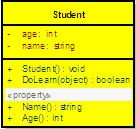

Object-oriented programming (OOP) is a programming paradigm based on the concept of "objects", which are data structures that contain data, in the form of fields, often known as attributes; and code, in the form of procedures, often known as methods. A distinguishing feature of objects is that an object's procedures can access and often modify the data fields of the object with which they are associated (objects have a notion of "this"). In OO programming, computer programs are designed by making them out of objects that interact with one another. There is significant diversity in object-oriented programming, but most popular languages are class-based, meaning that objects are instances of classes, which typically also determines their type. Many of the most widely used programming languages are multi-paradigm programming languages that support object-oriented programming to a greater or lesser degree, typically in combination with imperative, procedural programming. Significant object-oriented languages include Python, C++, Objective-C, Smalltalk, Delphi, Java, Swift, C#, Perl, Ruby and PHP.
The encapsulation is the inclusion-within a program object-of all the resources needed for the object to function, basically, the methods and the data. In OOP the encapsulation is mainly achieved by creating classes, the classes expose public methods and properties. A class is kind of a container or capsule or a cell, which encapsulate a set of methods, attribute and properties to provide its indented functionalities to other classes. In that sense, encapsulation also allows a class to change its internal implementation without hurting the overall functioning of the system. That idea of encapsulation is to hide how a class does its business, while allowing other classes to make requests of it.
Abstraction is an emphasis on the idea, qualities and properties rather than the particulars (a suppression of detail). The importance of abstraction is derived from its ability to hide irrelevant details and from the use of names to reference objects. Abstraction is essential in the construction of programs. It places the emphasis on what an object is or does rather than how it is represented or how it works. Thus, it is the primary means of managing complexity in large programs. While abstraction reduces complexity by hiding irrelevant detail, generalization reduces complexity by replacing multiple entities which perform similar functions with a single construct. Generalization is the broadening of application to encompass a larger domain of objects of the same or different type. Programming languages provide generalization through variables, parameterization, generics and polymorphism. It places the emphasis on the similarities between objects. Thus, it helps to manage complexity by collecting individuals into groups and providing a representative which can be used to specify any individual of the group.
According to the above example the new class (IOException), which is called the derived class or subclass, inherits the members of an existing class (Exception), which is called the base class or super-class. The class IOException can extend the functionality of the class Exception by adding new types and methods and by overriding existing ones. Just like abstraction is closely related with generalization, the inheritance is closely related with specialization. It is important to discuss those two concepts together with generalization to better understand and to reduce the complexity. One of the most important relationships among objects in the real world is specialization, which can be described as the “is-a” relationship. When we say that a dog is a mammal, we mean that the dog is a specialized kind of mammal. It has all the characteristics of any mammal (it bears live young, nurses with milk, has hair), but it specializes these characteristics to the familiar characteristics of canis domesticus. A cat is also a mammal. As such, we expect it to share certain characteristics with the dog that are generalized in Mammal, but to differ in those characteristics that are specialized in cats.
Polymorphisms is a generic term that means 'many shapes'. More precisely Polymorphisms means the ability to request that the same operations be performed by a wide range of different types of things. At times, I used to think that understanding Object Oriented Programming concepts have made it difficult since they have grouped under four main concepts, while each concept is closely related with one another. Hence one has to be extremely careful to correctly understand each concept separately, while understanding the way each related with other concepts. In OOP the polymorphisms is achieved by using many different techniques named method overloading, operator overloading, and method overriding
I don't think, that it is realistic trying to make a programming language be everything to everybody. The language becomes bloated, hard to learn, and hard to read if everything plus the kitchen sink is thrown in. In another word every language has their limitations. As system architect and designer we should be able to fully and more importantly correctly (this also mean that you shouldn’t use a ballistic missile to kill a fly or hire FBI to catch the fly) utilize the available tools and features to build usable, sustainable, maintainable and also very importantly expandable software systems, that fully utilize the feature of the language to bring a competitively advance system to their customers. In order to do it, the foundation of a system places a vital role. The design or the architecture of a software system is the foundation. It hold the system together, hence designing a system properly (this never mean an *over* designing) is the key to the success. When you talk about designing a software system, the correct handling of OOP concept is very important. I have made the above article richer with idea but still kept it short so that one can learn/ remind all of important concept at a glance. Hope you all will enjoy reading it.